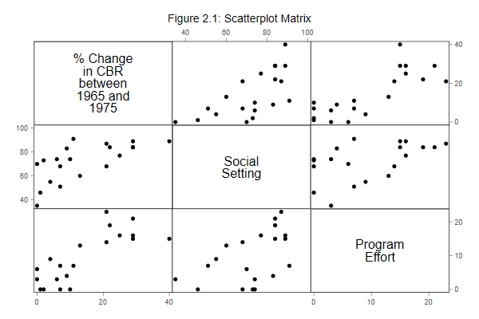

We start with the linear models in Chapter 2 of the lecture notes,
showing how to use the regress command in Stata to fit
regression, analysis of variance, and analysis of covariance models.
For a brief description of the program effort data see the lecture notes or point your browser to the datasets page. All datasets used in the course are in plain text format, and they are also available as Stata system files. Both formats can be read directly from the web.
. use https://grodri.github.io/datasets/effort, clear (Family Planning Effort Data)
Let us list the data to check that we got them OK.
. list country setting effort change, clean
country setting effort change
1. Bolivia 46 0 1
2. Brazil 74 0 10
3. Chile 89 16 29
4. Colombia 77 16 25
5. CostaRica 84 21 29
6. Cuba 89 15 40
7. DominicanRep 68 14 21
8. Ecuador 70 6 0
9. ElSalvador 60 13 13
10. Guatemala 55 9 4
11. Haiti 35 3 0
12. Honduras 51 7 7
13. Jamaica 87 23 21
14. Mexico 83 4 9
15. Nicaragua 68 0 7
16. Panama 84 19 22
17. Paraguay 74 3 6
18. Peru 73 0 2
19. TrinidadTobago 84 15 29
20. Venezuela 91 7 11
As you can see, we have 20 observations on three variables: social
setting, family planning effort, and fertility
change.
The next thing we want to do is plot the data for a closer look. The importance of becoming familiar with your data before undertaking sophisticated analyses cannot be over-emphasized. Let us create scatterplots of all pairs of variables, reproducing Figure 2.1 in the notes.
. graph matrix change setting effort, ///
> title("Figure 2.1: Scatterplot Matrix")
. graph export fig21.png, width(600) replace
file fig21.png saved as PNG format

After generating the graph you can print it using the command
graph print, save it in Stata’s own format using
graph save, or export it into other formats using
grap export. I exported the graph to portable
network graphics (PNG) format for inclusion on this web
page. Word users may be better off exporting to windows
metafile format (WMF) or the enhanced variant (EMF). LaTeX
users may prefer to save directly into PDF format.
Your graph may look slightly different than mine, depending on the
scheme you use. The Stata default is called
s2color, but these logs use plottig. Type
help scheme if you are interested in this subject.
Updated fall 2022